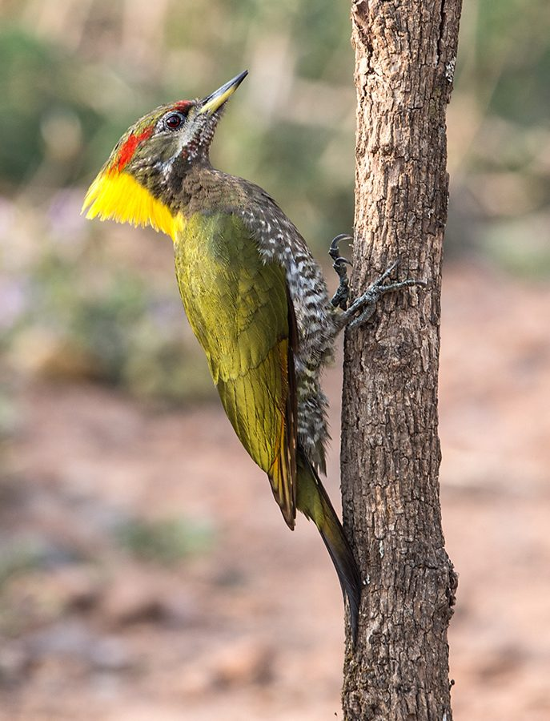

लेसर येलोनेपLesser Yellownape
Picus chlorolophus · Picidae · BRD-0352

- Scientific name वैज्ञानिक नाम
- Picus chlorolophus Vieillot, 1818
- Family कुल
- Picidae
- Hindi हिंदी
- लेसर येलोनेप
- Local names स्थानीय नाम
- lesser yellownape
- Status here यहाँ की स्थिति
- native
- Movement आवागमन
- Resident, here all year
- Known from कहाँ दर्ज
- Others have published records from the wider Awadh–Purvanchal plain, none yet from Basti–Ayodhya अवध–पूर्वांचल से दूसरों के प्रकाशित अभिलेख, बस्ती–अयोध्या से अभी नहीं
- IUCN IUCN
- LC
- Review समीक्षा
- not yet reviewed
When to look कब देखें
Present all year. साल भर मौजूद।
Tell it apart from इनसे अलग पहचानें
लेसर येलोनेप / Lesser Yellownape
Picus chlorolophus Vieillot, 1818 — Picidae
लेसर येलोनेप — तराई और उप-हिमालयी जंगलों का एक छोटा, चमकीला हरा कठफोड़वा। बेकर (1927) के अनुसार इसके सिर के पिछले भाग पर एक प्रमुख सुनहरा-पीला शिखा-पट्टा होता है और नर के माथे व मूंछ की रेखा पर गहरा लाल रंग दिखाई देता है। इसकी पीठ चमकीली पीली-हरी और निचला हिस्सा धारियों वाला होता है। यह वनों और बांस के झुरमुटों में रहता है तथा पेड़ों में छेद बनाकर घोंसला बनाता है।
Quick Identification त्वरित पहचान
| Feature | Description | |
|---|---|---|
| Habit | Small arboreal green woodpecker of submontane forest and bamboo jungle | |
| Size | Distinctly smaller than the [[grey_headed_woodpecker | Grey-headed Woodpecker]], with golden-yellow nape |
| Head & Crest | Nuchal crest bright golden-yellow; forehead, supercilium, and moustachial streak crimson in male (Baker 1927, p. 17) | |
| Upperparts | Bright yellowish-green upper plumage; quills maroon-red on outer webs edged with green (Baker 1927, p. 17) | |
| Underparts | Chin and throat brown barred with whitish; breast olive-brown; abdomen barred brown and white (Baker 1927, p. 17) | |
| Soft Parts | Iris brick-red to crimson; bill horny-yellowish, darker on culmen and tip; feet plumbeous green (Baker 1927, p. 17) |
Field tip: Look for a small green woodpecker with a conspicuous golden-yellow nuchal crest and maroon-red wash on the wings in submontane forest (Baker 1927).
हिंदी:
इसके सिर के पीछे सुनहरा-पीला शिखा-पट्टा होता है, पंखों के बाहरी किनारों पर लाल-भूरा रंग होता है और पेट पर भूरी व सफेद धारियाँ होती हैं (बेकर 1927)।
Morphology आकारिकी
Measurements as given by Baker (1927):
| Measurement | Range |
|---|---|
| Biometrics | Total length about 275 mm. ; wing 126 to 142 mm. ; tail 74 to 94 mm. ; tarsus about 22 to 23 mm. ; culmen 21 to 28 mm. (Baker 1927 as Picus chlorolophus chlorolophus) |
The Lesser Yellownape is a slender, brightly coloured green woodpecker. Stuart Baker (1927, p. 17) described the male: "Nasal plumes and a line above the lores black ; forehead, supercilium to the nape and moustachial streak crimson, the latter mottled with dark brown and white ; crown olive-green ; occipital feathers edged with crimson, forming a broken band linking the ends of the supercilia ; nuchal crest golden-yellow; upper plumage bright yellowish-green".
The soft parts are described by Baker (1927, p. 17): iris brick-red to crimson; bill horny-yellowish or pale plumbeous yellow, much darker on the culmen and tip; legs and feet dull green or plumbeous green. Females lack crimson on the forehead, the red being restricted to a short broad line behind the eye (Baker 1927, p. 17).
हिंदी:
बेकर (1927) के अनुसार इसकी कुल लंबाई लगभग 275 मिमी, पंख 126 से 142 मिमी, पूंछ 74 से 94 मिमी, टार्सस 22 से 23 मिमी और कल्मेन 21 से 28 मिमी होता है। नर के सिर पर लाल धारियाँ और गर्दन पर सुनहरा-पीला पट्टा होता है।
Behaviour & Ecology व्यवहार और पारिस्थितिकी
Stuart Baker (1927, p. 18) noted that its habits are "very similar to those of P. canus", but "unlike that bird it is often found in mixed bamboo- and scrub-jungle as well as in all sorts of forest."
Baker (1927, p. 18) described its ordinary vocalisation as a rather soft replica of the Grey-headed Woodpecker's note, but noted that during the breeding season both sexes utter "a low chuckling sound, rapidly repeated", especially during courtship chases among trees.
हिंदी:
बेकर (1927) के अनुसार यह मिश्रित बांस और झाड़ीदार जंगलों में रहता है। प्रजनन काल में नर और मादा एक-दूसरे का पीछा करते हुए धीमी चहचहाहट भरी आवाज निकालते हैं।
Life Cycle / Phenology जीवन चक्र
In Assam it nests in spring, from early April to the end of May (Baker 1927, p. 17).
Stuart Baker (1927, p. 18) observed that it excavates its nesting tunnel in trees, sometimes low down near the ground and at other times high up in branches in thin evergreen forest.
हिंदी:
बेकर (1927) के अनुसार असम में यह अप्रैल और मई के महीनों में पेड़ों में छेद बनाकर घोंसला बनाता है।
Host Plants or Prey आहार
No source opened for this atlas lists the food of this bird.
हिंदी:
इस एटलस के लिए खोले गए किसी भी स्रोत में इस पक्षी के विशिष्ट भोजन की सूची नहीं है।
Predators / Natural Enemies शत्रु
No source opened for this atlas names a specific predator of this bird.
हिंदी:
इस एटलस के लिए खोले गए किसी भी स्रोत में इस पक्षी के किसी विशिष्ट शिकारी का नाम नहीं है।
Agricultural / Human Relevance कृषि प्रासंगिकता
No source opened for this atlas describes this bird's dealings with people. Protected under the Wildlife (Protection) Act, 1972.
हिंदी:
इस एटलस के लिए खोले गए किसी भी स्रोत में लोगों के साथ इस पक्षी के व्यवहार या संबंधों का विवरण नहीं है। यह वन्यजीव (संरक्षण) अधिनियम, 1972 के तहत संरक्षित है।
Expected Locally स्थानीय रूप से अपेक्षित
Not a field record. Written from published accounts for eastern Uttar Pradesh. No confirmed local sighting yet — if you have seen it, that is what the atlas needs.
अभी तक स्थानीय पुष्टि नहीं। यह विवरण प्रकाशित स्रोतों से है, किसी अवलोकन से नहीं।
GBIF holds published records from the wider Awadh–Purvanchal plain, none yet from Basti–Ayodhya.
In Uttar Pradesh, published records are known only from Lakhimpur Kheri district in the Terai sal belt, where seventeen records by twenty-five observers were gathered between 2016 and 2025 in February to May and November.
A first record would be a photograph of the bird with place and date, sent through the About page.
Distribution वितरण
Stuart Baker (1927, p. 17) recorded the distribution of the nominate form: "Sikkim, Bhutan, Assam, Cachar and Sylhet ; Hill Tippera and Chittagong Hill Tracts in Eastern Bengal ; Northern Chin and Kachin Hills ; Northern Shan States and Yunnan." The western race simlae runs "North-West Himalayas from Murree and Mussoorie to Garhwal" (Baker 1927, p. 18).
In Uttar Pradesh, records are restricted to the northern Terai forests of Lakhimpur Kheri. Dudhwa and its surrounding forests lie south of both ranges, and no source opened for this atlas assigns the submontane Terai birds to a particular subspecies.
हिंदी:
बेकर (1927) के अनुसार इसका वितरण सिक्किम, असम और हिमालयी क्षेत्रों में है। उत्तर प्रदेश में इसके रिकॉर्ड केवल लखीमपुर खीरी के तराई जंगलों से दर्ज हैं।
Research Questions शोध प्रश्न
- Which tree species are predominantly selected for nesting hole excavation by Lesser Yellownapes in the Terai sal forests? / तराई के साल वनों में यह प्रजाति घोंसला बनाने के लिए किन पेड़ों को प्राथमिकता देती है?
- Does the population in the Dudhwa Terai belt represent an intergrade zone between the western race simlae and the eastern nominate race? / क्या दुधवा तराई क्षेत्र की आबादी पश्चिमी और पूर्वी उप-प्रजातियों के बीच का संक्रमण क्षेत्र है?
- How does foraging height on tree trunks differ between this species and the larger Grey-headed Woodpecker in mixed woodland?
- What is the frequency of drumming displays during the pre-monsoon territorial establishment period?
- Can citizen observers distinguish calls of the Lesser Yellownape from other green woodpeckers during morning forest surveys? (Observers can note call descriptions along forest fire-lines.)
Similar Species मिलती-जुलती प्रजातियाँ
| Species | How to tell apart | हिंदी | |
|---|---|---|---|
| [[grey_headed_woodpecker | Grey-headed Woodpecker]] (Picus canus) | Crimson crown in male, black crest and nape, unbarred dark olive underparts, and bright yellow-green rump | ग्रे-हेडेड कठफोड़वा |
| [[black_rumped_flameback | Black-rumped Flameback]] (Dinopium benghalense) | Golden-yellow back with black rump, three toes, bold black-and-white face pattern, and crimson crest | कठफोड़वा / सुनहरा कठफोड़वा |
| [[himalayan_flameback | Himalayan Flameback]] (Dinopium shorii) | Golden-olive mantle, distinct red or yellow crest, and warm buff face with double dark cheek-stripe | हिमालयन फ्लेमबैक |
| [[greater_flameback | Greater Flameback]] (Chrysocolaptes guttacristatus) | Much larger build, prominent crest, red rump, and heavy bill with four toes | ग्रेटर फ्लेमबैक |
Field rule: The bright golden-yellow nuchal crest combined with bright green upperparts and barred brown-and-white belly separates the Lesser Yellownape from all other green woodpeckers (Baker 1927).
हिंदी:
ग्रे-हेडेड कठफोड़वे के नर का मुकुट लाल और गर्दन काली होती है; लेसर येलोनेप के सिर के पीछे चमकीला पीला शिखा-पट्टा और पेट पर धारियाँ होती हैं।
Taxonomy & Classification वर्गीकरण
Original description. Described by Louis Pierre Vieillot in 1818 in Nouveau Dictionnaire d'Histoire Naturelle (nouvelle édition, tome 26, p. 78), under the basionym Picus chlorolophus. The type locality is Bengal.
Synonyms and historical names. Blanford and Oates treated the species under the genus Gecinus (Gecinus chlorolophus). Stuart Baker (1927, p. 17) retained Picus chlorolophus and recognized several geographical races.
Subspecies. Stuart Baker (1927, pp. 17–18) recognized Picus chlorolophus chlorolophus from Bengal and Assam and Picus chlorolophus simlae from the north-western Himalayas; the Terai records lie south of both described ranges.
Family and order placement. Order Piciformes, family Picidae (woodpeckers), genus Picus.
IUCN status rationale. Evaluated as Least Concern (LC) by the IUCN Red List (BirdLife International 2016).
हिंदी:
विएलो ने 1818 में इसका वर्णन किया था। यह पिसिडी (कठफोड़वा) कुल का सदस्य है और प्रकृति संरक्षण संघ द्वारा संकटमुक्त (LC) श्रेणी में रखा गया है।
Photo Gallery फोटो गैलरी
No photos yet — add field photos to media/species/lesser_yellownape/ and run node scripts/sync_photos.js.
Photos needed आवश्यक फोटो
- [ ] Adult male showing golden-yellow crest and red moustachial streak (सुनहरी कलगी और लाल मूंछ वाला नर)
- [ ] View of barred underparts and wings while climbing a forest tree (पेड़ पर चढ़ते समय पेट की धारियों का दृश्य)
References संदर्भ
- Vieillot, L. P. (1818). Nouveau Dictionnaire d'Histoire Naturelle. Nouvelle édition. Tome 26. Chez Deterville, Paris, p. 78 (as Picus chlorolophus).
- Baker, E. C. S. (1927). The Fauna of British India, Including Ceylon and Burma. Birds. Vol. 4. 2nd ed. Taylor & Francis, London, pp. 17–18 (as Picus chlorolophus).
- Ali, S. & Ripley, S. D. (1987). Compact Handbook of the Birds of India and Pakistan. 2nd ed. Oxford University Press, New Delhi.
- Grimmett, R., Inskipp, C. & Inskipp, T. (2011). Birds of the Indian Subcontinent. 2nd ed. Christopher Helm, London.
- Rasmussen, P. C. & Anderton, J. C. (2012). Birds of South Asia: The Ripley Guide. 2nd ed. Smithsonian Institution and Lynx Edicions, Washington, D.C. and Barcelona.
- BirdLife International (2016). Picus chlorolophus. The IUCN Red List of Threatened Species 2016: e.T22681431A92906492. doi:10.2305/IUCN.UK.2016-3.RLTS.T22681431A92906492.en
- GBIF Occurrence Data — Picus chlorolophus, India (2025).
Source file: species/fauna/birds/lesser_yellownape.md